CODING AGENTS AS PIXEL WORLD MODELS
traex/DeepSeek-V4.1-Flash · 0066
点击播放 · 原生 RGB 像素
逐轮保存的候选
回放视频、检查图与代码变化。
每份候选均可单独播放。实际图片检查记录在下方工具轨迹中。
候选 01播放与检查图
点击播放 · 原生 RGB 像素
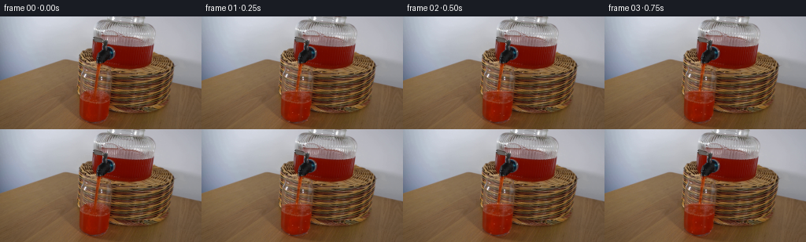
展开代码变化
--- 上一保存版本
+++ 本次保存版本
@@ -0,0 +1,266 @@
+from pathlib import Path
+
+import cv2
+import numpy as np
+from PIL import Image, ImageDraw
+
+import artifact_io
+
+
+ROOT = Path(__file__).resolve().parent
+WIDTH = 256
+HEIGHT = 144
+FRAME_COUNT = 20
+FPS = 4
+
+
+def smoothstep(edge0, edge1, value):
+ t = np.clip((value - edge0) / (edge1 - edge0), 0.0, 1.0)
+ return t * t * (3.0 - 2.0 * t)
+
+
+def cup_bounds(y):
+ narrowing = np.clip((97.0 - y) * 0.48, 0.0, 2.8)
+ return 100.8 + narrowing, 144.6 - narrowing
+
+
+def surface_height(x, time):
+ u = min(time / 4.75, 1.0)
+ rise = 3.35 * (0.58 * u + 0.42 * (3.0 * u * u - 2.0 * u * u * u))
+ wave = (
+ 0.34 * np.sin(0.32 * (x - 122.0) + 1.15 * time)
+ + 0.12 * np.sin(0.83 * (x - 122.0) - 1.7 * time)
+ )
+ return 95.65 - rise + wave
+
+
+def add_rising_liquid(image, source, time):
+ image = image.copy()
+ blurred = cv2.GaussianBlur(source.astype(np.float32), (0, 0), 1.05)
+ source_float = source.astype(np.float32)
+ yy, xx = np.mgrid[0:HEIGHT, 0:WIDTH]
+
+ for y in range(91, 100):
+ left, right = cup_bounds(y)
+ alpha_x = smoothstep(left - 1.2, left + 1.0, xx[y]) * (
+ 1.0 - smoothstep(right - 1.0, right + 1.2, xx[y])
+ )
+ surface = surface_height(xx[y].astype(np.float32), time)
+ alpha_y = smoothstep(surface - 0.35, surface + 0.75, yy[y]) * (
+ 1.0 - smoothstep(96.5, 98.4, yy[y])
+ )
+ alpha = 0.93 * alpha_x * alpha_y
+ if not np.any(alpha > 0.01):
+ continue
+
+ ref_y = min(104, max(99, y + 6))
+ fill = blurred[ref_y].copy()
+ detail = source_float[ref_y] - blurred[ref_y]
+ fill += 0.42 * detail
+ fill += np.array([3.0, 1.2, -0.5], dtype=np.float32)
+ fill = fill[None, :, :]
+ image[y] = image[y] * (1.0 - alpha[:, None]) + fill[0] * alpha[:, None]
+
+ # A soft meniscus catches the light at the top of the rising liquid.
+ edge = np.exp(-np.square((yy[y] - surface) / 0.62))
+ edge_alpha = 0.20 * alpha_x * edge
+ if np.any(edge_alpha > 0.01):
+ glint = np.array([255.0, 166.0, 112.0], dtype=np.float32)
+ image[y] = (
+ image[y] * (1.0 - edge_alpha[:, None])
+ + glint[None, :] * edge_alpha[:, None]
+ )
+ return image
+
+
+def advect_liquid(image, time):
+ yy, xx = np.mgrid[0:HEIGHT, 0:WIDTH].astype(np.float32)
+ surface = surface_height(xx, time)
+ left = np.full((HEIGHT, WIDTH), 100.0, dtype=np.float32)
+ right = np.full((HEIGHT, WIDTH), 145.0, dtype=np.float32)
+ for y in range(HEIGHT):
+ left[y], right[y] = cup_bounds(y)
+
+ red = image[..., 0]
+ green = image[..., 1]
+ blue = image[..., 2]
+ interior = smoothstep(left, left + 1.4, xx) * (
+ 1.0 - smoothstep(right - 1.4, right, xx)
+ )
+ liquid = (
+ smoothstep(surface + 0.6, surface + 2.2, yy)
+ * interior
+ * smoothstep(0.95, 1.35, red / (green + 3.0))
+ )
+
+ dx = 0.42 * np.sin(2.0 * np.pi * (yy / 18.0 - 1.55 * time))
+ dy = 0.16 * np.sin(2.0 * np.pi * (xx / 31.0 + 0.85 * time))
+ map_x = (xx + dx).astype(np.float32)
+ map_y = (yy + dy).astype(np.float32)
+ warped = cv2.remap(
+ image,
+ map_x,
+ map_y,
+ interpolation=cv2.INTER_LINEAR,
+ borderMode=cv2.BORDER_REFLECT,
+ )
+ blend = (0.42 * liquid)[..., None]
+ image = image * (1.0 - blend) + warped * blend
+
+ shimmer = (
+ 1.0
+ + 0.022 * np.sin(2.0 * np.pi * (yy / 13.0 - 1.85 * time) + 0.10 * (xx - 122.0))
+ + 0.009 * np.sin(2.0 * np.pi * (xx / 17.0 + 1.2 * time))
+ )
+ shimmer = 1.0 + (shimmer - 1.0) * liquid
+ return image * shimmer[..., None]
+
+
+def animate_stream(image, time):
+ image = image.copy()
+ yy, xx = np.mgrid[0:HEIGHT, 0:WIDTH].astype(np.float32)
+ red = image[..., 0]
+ green = image[..., 1]
+ blue = image[..., 2]
+ strip = smoothstep(116.0, 118.0, xx) * (1.0 - smoothstep(127.0, 129.0, xx))
+ vertical = smoothstep(67.0, 69.0, yy) * (1.0 - smoothstep(98.0, 99.0, yy))
+ stream = strip * vertical * smoothstep(1.45, 1.95, red / (green + 4.0))
+ stream = cv2.GaussianBlur(stream, (0, 0), 0.55)
+
+ phase = 2.0 * np.pi * (yy / 10.5 - 2.15 * time)
+ flow = 1.0 + 0.060 * np.sin(phase) + 0.020 * np.sin(2.3 * phase + 0.8)
+ image *= (1.0 + (flow - 1.0) * stream)[..., None]
+
+ # Thin moving glints make the otherwise continuous ribbon read as flowing.
+ for offset, strength in ((0.0, 0.22), (13.5, 0.14)):
+ center = 69.0 + ((time * 23.0 + offset) % 27.0)
+ glint = np.exp(-np.square((yy - center) / 1.05)) * stream
+ color = np.array([255.0, 166.0, 92.0], dtype=np.float32)
+ alpha = (strength * glint)[..., None]
+ image = image * (1.0 - alpha) + color * alpha
+ return image
+
+
+def composite_rgba(image, overlay):
+ base = Image.fromarray(np.clip(image, 0, 255).astype(np.uint8), "RGB")
+ return np.asarray(Image.alpha_composite(base.convert("RGBA"), overlay).convert("RGB")).astype(
+ np.float32
+ )
+
+
+def add_surface_agitation(image, time):
+ scale = 4
+ x0, x1 = 107, 140
+ y0, y1 = 86, 105
+ patch = Image.new("RGBA", ((x1 - x0) * scale, (y1 - y0) * scale), (0, 0, 0, 0))
+ draw = ImageDraw.Draw(patch)
+ center_x = 123.0
+ center_y = float(surface_height(np.array([center_x]), time)[0])
+
+ # Multiple low-contrast rings keep the impact agitated without a cartoon splash.
+ for index in range(3):
+ phase = (time * 1.15 + index / 3.0) % 1.0
+ radius = 2.1 + 4.7 * phase
+ alpha = int(48.0 * (1.0 - phase) ** 1.45)
+ if alpha <= 0:
+ continue
+ px = (center_x - x0) * scale
+ py = (center_y - y0) * scale
+ rx = radius * scale
+ ry = (0.28 * radius + 0.28) * scale
+ draw.ellipse(
+ (px - rx, py - ry, px + rx, py + ry),
+ outline=(255, 174, 112, alpha),
+ width=max(1, scale // 2),
+ )
+
+ # A tiny dark depression and two short crown highlights sell the stream entry.
+ px = (center_x - x0) * scale
+ py = (center_y - y0) * scale
+ draw.ellipse(
+ (px - 2.6 * scale, py - 0.55 * scale, px + 2.6 * scale, py + 0.75 * scale),
+ fill=(103, 18, 7, 35),
+ )
+ for side in (-1.0, 1.0):
+ wobble = 0.45 * np.sin(4.4 * time + side)
+ sx = (center_x + side * (2.2 + wobble)) * scale - x0 * scale
+ sy = (center_y - 0.7 - 0.45 * abs(np.sin(3.2 * time + side))) * scale - y0 * scale
+ draw.ellipse(
+ (sx - 0.45 * scale, sy - 0.9 * scale, sx + 0.45 * scale, sy + 0.9 * scale),
+ fill=(255, 188, 132, 115),
+ )
+
+ patch = patch.resize((x1 - x0, y1 - y0), Image.Resampling.LANCZOS)
+ overlay = Image.new("RGBA", (WIDTH, HEIGHT), (0, 0, 0, 0))
+ overlay.alpha_composite(patch, (x0, y0))
+ return composite_rgba(image, overlay)
+
+
+def add_bubbles(image, time):
+ scale = 4
+ patch = Image.new("RGBA", (WIDTH * scale, HEIGHT * scale), (0, 0, 0, 0))
+ draw = ImageDraw.Draw(patch)
+ bubbles = (
+ (111.0, 136.0, 5.5, 0.4, 0.9),
+ (128.0, 132.0, 6.7, 2.1, 0.7),
+ (135.0, 138.0, 4.9, 4.2, 0.75),
+ (116.0, 130.0, 7.4, 5.4, 0.6),
+ (123.0, 134.0, 5.9, 7.2, 0.55),
+ (132.0, 128.0, 8.0, 8.5, 0.5),
+ )
+ for x_base, y_start, speed, phase, size in bubbles:
+ top = float(surface_height(np.array([x_base]), time)[0]) + 3.2
+ travel = max(8.0, y_start - top)
+ distance = (time * speed + phase) % travel
+ y = y_start - distance
+ if y <= top:
+ continue
+ x = x_base + 0.62 * np.sin(1.8 * time + phase)
+ radius = size * (0.75 + 0.45 * (1.0 - (y - top) / travel))
+ alpha = int(42 + 34 * min(1.0, (y - top) / 8.0))
+ px, py = x * scale, y * scale
+ rx, ry = radius * scale, radius * 0.72 * scale
+ draw.ellipse(
+ (px - rx, py - ry, px + rx, py + ry),
+ outline=(255, 150, 103, alpha),
+ width=max(1, scale // 2),
+ )
+ draw.arc(
+ (px - rx, py - ry, px + rx, py + ry),
+ start=202,
+ end=326,
+ fill=(255, 205, 163, min(95, alpha + 24)),
+ width=max(1, scale // 2),
+ )
+
+ patch = patch.resize((WIDTH, HEIGHT), Image.Resampling.LANCZOS)
+ return composite_rgba(image, patch)
+
+
+def generate_frames():
+ source = np.asarray(Image.open(ROOT / "first_frame.png").convert("RGB"))
+ assert source.shape == (HEIGHT, WIDTH, 3)
+ frames = []
+ for index in range(FRAME_COUNT):
+ if index == 0:
+ frames.append(source.copy())
+ continue
+
+ time = index / FPS
+ image = source.astype(np.float32)
+ image = add_rising_liquid(image, source, time)
+ image = advect_liquid(image, time)
+ image = animate_stream(image, time)
+ image = add_surface_agitation(image, time)
+ image = add_bubbles(image, time)
+ frames.append(np.clip(np.rint(image), 0, 255).astype(np.uint8))
+ return np.stack(frames)
+
+
+def main():
+ frames = generate_frames()
+ artifact_io.save(frames, ROOT)
+
+
+if __name__ == "__main__":
+ main()
候选 02播放与检查图
点击播放 · 原生 RGB 像素
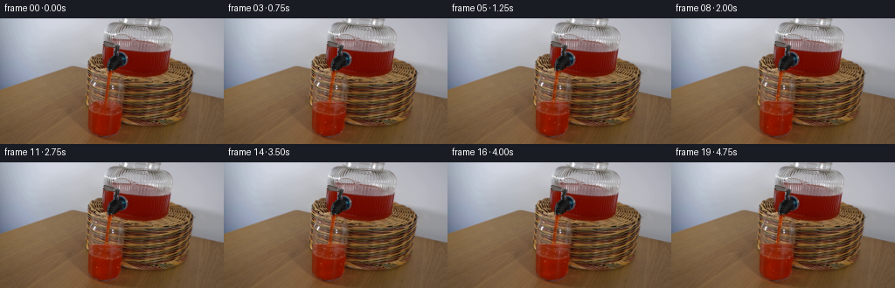
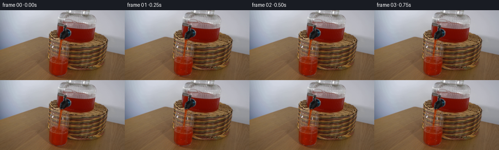
展开代码变化
--- 上一保存版本
+++ 本次保存版本
@@ -26,12 +26,12 @@
def surface_height(x, time):
u = min(time / 4.75, 1.0)
- rise = 3.35 * (0.58 * u + 0.42 * (3.0 * u * u - 2.0 * u * u * u))
+ rise = 3.65 * (0.58 * u + 0.42 * (3.0 * u * u - 2.0 * u * u * u))
wave = (
0.34 * np.sin(0.32 * (x - 122.0) + 1.15 * time)
+ 0.12 * np.sin(0.83 * (x - 122.0) - 1.7 * time)
)
- return 95.65 - rise + wave
+ return 96.15 - rise + wave
def add_rising_liquid(image, source, time):
@@ -40,14 +40,14 @@
source_float = source.astype(np.float32)
yy, xx = np.mgrid[0:HEIGHT, 0:WIDTH]
- for y in range(91, 100):
+ for y in range(89, 100):
left, right = cup_bounds(y)
alpha_x = smoothstep(left - 1.2, left + 1.0, xx[y]) * (
1.0 - smoothstep(right - 1.0, right + 1.2, xx[y])
)
surface = surface_height(xx[y].astype(np.float32), time)
- alpha_y = smoothstep(surface - 0.35, surface + 0.75, yy[y]) * (
- 1.0 - smoothstep(96.5, 98.4, yy[y])
+ alpha_y = smoothstep(surface - 0.20, surface + 0.68, yy[y]) * (
+ 1.0 - smoothstep(96.7, 98.3, yy[y])
)
alpha = 0.93 * alpha_x * alpha_y
if not np.any(alpha > 0.01):
@@ -57,15 +57,15 @@
fill = blurred[ref_y].copy()
detail = source_float[ref_y] - blurred[ref_y]
fill += 0.42 * detail
- fill += np.array([3.0, 1.2, -0.5], dtype=np.float32)
+ fill += np.array([2.5, 0.4, -1.2], dtype=np.float32)
fill = fill[None, :, :]
image[y] = image[y] * (1.0 - alpha[:, None]) + fill[0] * alpha[:, None]
# A soft meniscus catches the light at the top of the rising liquid.
edge = np.exp(-np.square((yy[y] - surface) / 0.62))
- edge_alpha = 0.20 * alpha_x * edge
+ edge_alpha = 0.16 * alpha_x * edge
if np.any(edge_alpha > 0.01):
- glint = np.array([255.0, 166.0, 112.0], dtype=np.float32)
+ glint = np.array([248.0, 157.0, 105.0], dtype=np.float32)
image[y] = (
image[y] * (1.0 - edge_alpha[:, None])
+ glint[None, :] * edge_alpha[:, None]
@@ -142,7 +142,7 @@
def composite_rgba(image, overlay):
- base = Image.fromarray(np.clip(image, 0, 255).astype(np.uint8), "RGB")
+ base = Image.fromarray(np.clip(image, 0, 255).astype(np.uint8)).convert("RGB")
return np.asarray(Image.alpha_composite(base.convert("RGBA"), overlay).convert("RGB")).astype(
np.float32
)
可观测工具轨迹
实际执行的命令与返回图片。
命令 1exit 0
/bin/bash -c "pwd && rg --files -g 'prompt.txt' -g 'GENERATION_RULES.md' -g 'first_frame.png' -g '"'!node_modules'"'"
命令 2exit 0
/bin/bash -c "sed -n '1,240p' prompt.txt"
命令 3exit 0
/bin/bash -c "sed -n '1,320p' GENERATION_RULES.md"
命令 4exit 0
/bin/bash -c "find . -maxdepth 2 -type f -printf '%P\\t%k KB\\n' | sort | head -200"
命令 5exit 0
/bin/bash -c "sed -n '1,260p' artifact_io.py"
命令 6exit 0
/bin/bash -c "sed -n '1,280p' player_template.html"
命令 7exit 127
/bin/bash -c "file first_frame.png && identify -verbose first_frame.png | sed -n '1,100p'"
命令 8exit 127
/bin/bash -c 'identify first_frame.png'
命令 9exit 0
/bin/bash -c "python - <<'PY'
from PIL import Image
im=Image.open('first_frame.png')
print(im.size, im.mode)
print(im.getpixel((0,0)), im.getpixel((255,143)))
PY"命令 10exit 0
/bin/bash -c "python - <<'PY'
from PIL import Image
im=Image.open('first_frame.png')
im.crop((85,35,160,144)).resize((450,654)).save('.tmp/crop_cup.png')
im.crop((100,35,155,115)).resize((440,640)).save('.tmp/crop_stream.png')
PY"命令 11exit 0
/bin/bash -c "python - <<'PY'
from PIL import Image
im=Image.open('first_frame.png')
im.crop((0,0,256,144)).resize((1024,576)).save('.tmp/full.png')
PY"命令 12exit 0
/bin/bash -c "python - <<'PY'
from PIL import Image, ImageDraw, ImageFont
im=Image.open('first_frame.png').resize((1024,576), Image.Resampling.NEAREST)
d=ImageDraw.Draw(im)
for x in range(0,256,10):
X=x*4
d.line([(X,0),(X,576)], fill=(255,0,255), width=1)
if x%20==0: d.text((X+2,2),str(x),fill=(255,255,0))
for y in range(0,144,10):
Y=y*4
d.line([(0,Y),(1024,Y)], fill=(0,255,255), width=1)
if y%20==0: d.text((2,Y+2),str(y),fill=(255,255,0))
im.save('.tmp/grid.png')
PY"命令 13exit 0
/bin/bash -c "python - <<'PY'
try:
import cv2; print('cv2',cv2.__version__)
except Exception as e: print('no cv2',e)
try:
import scipy; print('scipy',scipy.__version__)
except Exception as e: print('no scipy',e)
PY"命令 14exit 0
/bin/bash -c "python - <<'PY'
from PIL import Image
import numpy as np
im=np.array(Image.open('first_frame.png'))
# print rows around glass as quantized symbolic regions every 2 px
for y in range(52,144,4):
row=im[y]
s=''
for x in range(96,148,2):
r,g,b=row[x]
if r>120 and r>g*1.4: c='R'
elif max(r,g,b)<55: c='#'
elif max(r,g,b)<100: c='d'
elif min(r,g,b)>175: c='W'
elif b>r*1.1: c='b'
else: c='.'
s+=c
print(f'{y:3d} {s}')
PY"命令 15exit 0
/bin/bash -c "python - <<'PY'
from PIL import Image
im=Image.open('first_frame.png')
im.crop((96,45,155,120)).resize((590,750), Image.Resampling.NEAREST).save('.tmp/crop_stream_nn.png')
PY"命令 16exit 0
/bin/bash -c "python - <<'PY'
from PIL import Image
import numpy as np
im=np.array(Image.open('first_frame.png')).astype(int)
# For representative y, find reddish pixels in cup x=100..145
for y in [70,75,80,85,90,95,100,105,110,115,120,125,130,135,140,143]:
a=im[y,100:146]
mask=(a[:,0]>a[:,1]*1.4)&(a[:,0]>60)
xs=np.where(mask)[0]+100
print(y, (int(xs.min()),int(xs.max()),len(xs)) if len(xs) else None)
PY"命令 17exit 0
/bin/bash -c "python - <<'PY'
from PIL import Image
import numpy as np
im=np.array(Image.open('first_frame.png')).astype(np.int16)
for x,y in [(125,84),(127,90),(129,95),(128,99),(132,110),(112,118),(134,122),(121,140),(115,95),(120,100),(143,100),(103,100)]:
print(x,y,im[y,x].tolist())
PY"命令 18exit 0
/bin/bash -c "python - <<'PY'
from PIL import Image,ImageDraw
im=Image.open('first_frame.png').crop((90,55,155,144)).resize((520,712), Image.Resampling.NEAREST)
d=ImageDraw.Draw(im)
for x in range(90,156,5):
X=(x-90)*8
d.line([(X,0),(X,712)],fill=(0,255,255),width=1)
if x%10==0:d.text((X+2,2),str(x),fill=(255,255,0))
for y in range(55,145,5):
Y=(y-55)*8
d.line([(0,Y),(520,Y)],fill=(255,0,255),width=1)
if y%10==0:d.text((2,Y+2),str(y),fill=(255,255,0))
im.save('.tmp/cupgrid.png')
PY"命令 19exit 0
/bin/bash -c "python - <<'PY'
from PIL import Image
import numpy as np
im=np.array(Image.open('first_frame.png')).astype(float)
for y in range(84,126,2):
vals=[]
for x in range(104,145,4):
r,g,b=im[y,x]
if r>g*1.4 and r>65: vals.append(x)
if vals: print(y, min(vals), max(vals), vals)
PY"命令 20exit 0
/bin/bash -c "python - <<'PY'
from PIL import Image
import numpy as np
im=np.array(Image.open('first_frame.png')).astype(float)
# red threshold max around each row and boundaries with stronger red
for y in range(90,126,2):
xs=[]
for x in range(95,150):
r,g,b=im[y,x]
if r>60 and r>1.55*g and r>1.2*b: xs.append(x)
if xs: print(y,min(xs),max(xs),len(xs))
PY"命令 21exit 0
/bin/bash -c "python - <<'PY'
import cv2, numpy as np
from PIL import Image
im=np.array(Image.open('first_frame.png'))
r,g,b=[im[:,:,i].astype(int) for i in range(3)]
mask=((r>65)&(r>g*1.45)&(r>b*1.3)).astype(np.uint8)
mask[:70]=0; mask[:, :110]=0; mask[:,140:]=0
n,lab,stats,cents=cv2.connectedComponentsWithStats(mask,8)
for i in range(1,n):
x,y,w,h,a=stats[i]
if a>=2: print(i,(x,y,w,h,a),cents[i])
PY"命令 22exit 0
/bin/bash -c "python - <<'PY'
from PIL import Image
import numpy as np
im=np.array(Image.open('first_frame.png'))
for y in [88,90,92,94,96,98,100,110,120,130,140]:
print('y',y)
for x in range(104,146,2):
r,g,b=map(int,im[y,x]);
print(f'{x}:{r:3d},{g:3d},{b:3d}',end=' | ')
print()
PY"命令 23exit 0
/bin/bash -c "python - <<'PY'
from PIL import Image,ImageDraw
im=Image.open('first_frame.png').crop((108,62,140,100)).resize((640,760), Image.Resampling.NEAREST)
d=ImageDraw.Draw(im)
for x in range(108,141):
X=(x-108)*20
if x%2==0:d.line([(X,0),(X,760)],fill=(0,255,255),width=1)
if x%4==0:d.text((X+2,2),str(x),fill=(255,255,0))
for y in range(62,101):
Y=(y-62)*20
if y%2==0:d.line([(0,Y),(640,Y)],fill=(255,0,255),width=1)
if y%4==0:d.text((2,Y+2),str(y),fill=(255,255,0))
im.save('.tmp/spoutgrid.png')
PY"命令 24exit 0
/bin/bash -c "python - <<'PY'
from PIL import Image,ImageDraw
im=Image.open('first_frame.png').crop((112,70,138,100)).resize((520,600), Image.Resampling.NEAREST)
d=ImageDraw.Draw(im)
for x in range(112,139):
X=(x-112)*20
d.line([(X,0),(X,600)],fill=(0,255,255),width=1)
d.text((X+2,2),str(x),fill=(255,255,0))
for y in range(70,101):
Y=(y-70)*20
d.line([(0,Y),(520,Y)],fill=(255,0,255),width=1)
d.text((2,Y+2),str(y),fill=(255,255,0))
im.save('.tmp/streamgrid.png')
PY"命令 25exit 0
/bin/bash -c 'ls -la && ls -la .tmp | head'
命令 26exit 0
/bin/bash -c "python - <<'PY'
from PIL import Image
import numpy as np
im=np.array(Image.open('first_frame.png')).astype(float)
# row color summary x=112..137, print median and selected
for y in range(72,99):
a=im[y,112:138]
# red-ish candidate where red dominant
med=np.median(a,axis=0).astype(int)
mx=a.max(0).astype(int)
print(y, 'med',med.tolist(), 'max',mx.tolist())
PY"命令 27exit 0
/bin/bash -c "python - <<'PY'
from PIL import Image
import numpy as np
im=np.array(Image.open('first_frame.png')).astype(float)
# Inspect red scores as ASCII x=108..142 y=68..100, mark >1.6 ratio etc
for y in range(68,101):
s=''
for x in range(108,143):
r,g,b=im[y,x]
ratio=r/(g+1)
if ratio>2.2 and r>80:c='R'
elif ratio>1.7 and r>70:c='r'
elif max(r,g,b)<50:c='#'
elif max(r,g,b)>170 and min(r,g,b)>120:c='W'
elif max(r,g,b)<90:c='d'
else:c='.'
s+=c
print(f'{y:3d} {s}')
PY"命令 28exit 0
/bin/bash -c "python - <<'PY'
from PIL import Image
import numpy as np
im=np.array(Image.open('first_frame.png'))
for y in range(65,100):
a=im[y,108:143]
# save RGB row image expanded
out=Image.fromarray(np.repeat(np.repeat(a[None,:,:],6,axis=0),12,axis=1))
out.save(f'.tmp/row{y}.png')
PY"命令 29exit 0
/bin/bash -c "python - <<'PY'
from PIL import Image
import numpy as np
im=np.array(Image.open('first_frame.png')).astype(float)
for y in range(84,100):
vals=[]
for x in range(100,150):
r,g,b=im[y,x]
if r>g*1.8 and r>60: vals.append(x)
print(y, vals)
PY"命令 30exit 0
/bin/bash -c "python - <<'PY'
from PIL import Image,ImageDraw
im=Image.open('first_frame.png').crop((80,95,155,144)).resize((600,392), Image.Resampling.NEAREST)
d=ImageDraw.Draw(im)
for x in range(80,156,5):
X=(x-80)*8
d.line([(X,0),(X,392)],fill=(0,255,255),width=1)
d.text((X+2,2),str(x),fill=(255,255,0))
for y in range(95,145,5):
Y=(y-95)*8
d.line([(0,Y),(600,Y)],fill=(255,0,255),width=1)
d.text((2,Y+2),str(y),fill=(255,255,0))
im.save('.tmp/liquidgrid.png')
PY"命令 31exit 0
/bin/bash -c "python - <<'PY'
from PIL import Image
import numpy as np
im=np.array(Image.open('first_frame.png')).astype(float)
for y in range(100,144,4):
print('\\ny',y)
for x in range(98,142,2):
r,g,b=im[y,x]
ratio=r/(g+1)
if ratio>1.8:c='R'
elif ratio>1.45:c='r'
elif r<70:c='#'
elif min(r,g,b)>150:c='W'
elif b>r*1.1:c='b'
elif r<100:c='d'
else:c='.'
print(c,end='')
print()
PY"命令 32exit 0
/bin/bash -c "python - <<'PY'
from PIL import Image
import numpy as np
im=np.array(Image.open('first_frame.png')).astype(int)
for y in [96,97,98,99,100,101,102,103,104,105,106,110,120,130,135,138,140,142,143]:
xs=[]
for x in range(95,145):
r,g,b=im[y,x]
if r>65 and r>g*1.55 and r>b*1.25: xs.append(x)
print(y,(min(xs),max(xs)) if xs else None)
PY"命令 33exit 0
/bin/bash -c "python - <<'PY'
from PIL import Image
im=Image.open('first_frame.png')
# left/right glass crop
im.crop((85,90,155,144)).resize((700,540), Image.Resampling.NEAREST).save('.tmp/glassbase.png')
PY"命令 34exit 0
/bin/bash -c "python - <<'PY'
from PIL import Image
import numpy as np
im=np.array(Image.open('first_frame.png')).astype(float)
# estimate stream top x and center by high red score for y=70..95
for y in range(68,97,2):
score=[]
for x in range(108,138):
r,g,b=im[y,x]
score.append((r-g*1.4-b*.3,x))
print(y,sorted(score,reverse=True)[:5])
PY"命令 35exit 0
/bin/bash -c "python - <<'PY'
from PIL import Image
import numpy as np
im=np.array(Image.open('first_frame.png')).astype(float)
# print pixel values at stream center and left/right
for y in range(70,99):
print(y, [tuple(map(int,im[y,x])) for x in range(119,126)])
PY"命令 36exit 0
/bin/bash -c "python - <<'PY'
from PIL import Image
import numpy as np
im=np.array(Image.open('first_frame.png')).astype(float)
for y in [98,100,102,104,106,108,110,112,114,116,118,120,122,124,126,128,130,132,134,136,138,140,142]:
vals=[]
for x in range(98,146):
r,g,b=im[y,x]
if r>65 and r>g*1.55 and r>b*1.25: vals.append(x)
print(y, (min(vals),max(vals)) if vals else None)
PY"命令 37exit 0
/bin/bash -c "python - <<'PY'
from PIL import Image
import numpy as np
im=np.array(Image.open('first_frame.png')).astype(float)
# sample background/wicker around cup boundary
for y in [96,100,110,120,130,138,142]:
print('\\ny',y)
for x in [92,94,96,98,100,102,104,106,108,138,140,142,144,146,148,150]:
print(x, tuple(map(int,im[y,x])),end='; ')
print()
PY"命令 38exit 0
/bin/bash -c "python - <<'PY'
from PIL import Image
import numpy as np
im=np.array(Image.open('first_frame.png')).astype(float)
for y in [100,102,104,106,108,110,112,114,116,118,120,122,124,126,128,130,132,134]:
# print colors near right boundary x 136-150
print(y, [(x,tuple(map(int,im[y,x]))) for x in range(136,151)])
PY"命令 39exit 0
/bin/bash -c 'python generate.py'
命令 40exit 0
/bin/bash -c "ls -lh generate.py pixels.npz index.html inspection.png transition_check.png frames | sed -n '1,30p'"
命令 41exit 0
/bin/bash -c "python - <<'PY'
from PIL import Image
import numpy as np
src=np.array(Image.open('first_frame.png'))
f=np.array(Image.open('frames/00.png'))
print('frame0_identical', np.array_equal(src,f), 'max_abs', np.abs(src.astype(int)-f.astype(int)).max())
a=np.stack([np.array(Image.open(f'frames/{i:02d}.png')).astype(int) for i in range(20)])
b=np.stack([np.array(Image.open(f'frames/{i:02d}.png')).astype(int) for i in range(1,20)])
print('changed_pixels_last', np.any(a[-1]"'!=a[0],axis=2).sum())
print('"'frame_delta_mean', np.abs(b[1:]-b[:-1]).mean())
print('frame_delta_max', np.abs(b[1:]-b[:-1]).max())
PY"命令 42exit 0
/bin/bash -c "python - <<'PY'
from PIL import Image
for i in (0,5,10,15,19):
im=Image.open(f'frames/{i:02d}.png').crop((88,64,155,144)).resize((402,480),Image.Resampling.NEAREST)
im.save(f'.tmp/detail_{i:02d}.png')
PY"命令 43exit 0
/bin/bash -c "python - <<'PY'
from PIL import Image
import numpy as np
src=np.array(Image.open('first_frame.png')).astype(int)
for idx in [1,5,10,15,19]:
im=np.array(Image.open(f'frames/{idx:02d}.png')).astype(int)
diff=np.abs(im-src).max(2)
ys,xs=np.where(diff>2)
print(idx, 'bbox', (xs.min(),ys.min(),xs.max(),ys.max()), 'n',len(xs))
# rows with max changed counts
vals=[(int((ys==y).sum()),y) for y in np.unique(ys)]
print(sorted(vals, reverse=True)[:12])
PY"命令 44exit 0
/bin/bash -c "python - <<'PY'
from PIL import Image
import numpy as np
for idx in [0,1,5,10,15,19]:
im=np.array(Image.open(f'frames/{idx:02d}.png')).astype(float)
vals=[]
for x in range(104,140):
for y in range(86,99):
r,g,b=im[y,x]
if r>65 and r>g*1.55 and r>b*1.25: vals.append((y,x))
print(idx, 'nred',len(vals),'top',min(y for y,x in vals) if vals else None,'rows',sorted(set(y for y,x in vals))[:10])
PY"命令 45exit 0
/bin/bash -c "python - <<'PY'
from PIL import Image
import numpy as np
for idx in [0,19]:
im=np.array(Image.open(f'frames/{idx:02d}.png')).astype(float)
print('\\n',idx)
for y in range(91,100):
print(y,[(x,tuple(map(int,im[y,x]))) for x in range(108,140,4)])
PY"命令 46exit 0
/bin/bash -c "python - <<'PY'
from PIL import Image
import numpy as np
for idx in [0,19]:
im=np.array(Image.open(f'frames/{idx:02d}.png'))
crop=Image.fromarray(im[88:102,100:146]).resize((920,280),Image.Resampling.NEAREST)
crop.save(f'.tmp/surface_{idx}.png')
PY"命令 47exit 0
/bin/bash -c "python - <<'PY'
from PIL import Image
import numpy as np
im=np.array(Image.open('frames/19.png')).astype(int)
src=np.array(Image.open('first_frame.png')).astype(int)
d=im-src
# signed diff per row x=100..145; mean/max
for y in range(90,101):
a=d[y,100:146]
print(y,'mean',np.round(a.mean(0),1),'min',a.min(0),'max',a.max(0))
PY"命令 48exit 0
/bin/bash -c "python - <<'PY'
from PIL import Image
import numpy as np
for i in range(1,20):
a=np.array(Image.open(f'frames/{i:02d}.png')).astype(int)
b=np.array(Image.open(f'frames/{i-1:02d}.png')).astype(int)
d=np.abs(a-b).max(2)
ys,xs=np.where(d>3)
print(f'{i:02d}', 'n',len(xs),'bbox',(xs.min(),ys.min(),xs.max(),ys.max()) if len(xs) else None,'mean',round(d.mean(),3))
PY"命令 49exit 0
/bin/bash -c "python - <<'PY'
from PIL import Image
import numpy as np
src=np.array(Image.open('first_frame.png')).astype(int)
for idx in [1,5,10,15,19]:
im=np.array(Image.open(f'frames/{idx:02d}.png')).astype(int)
d=np.abs(im-src).max(2)
for y in [95,96,97,98,99,100,110,120,130,140,143]:
xs=np.where(d[y]>3)[0]
if len(xs): print(idx,y,xs.min(),xs.max(),len(xs), 'med',np.median(d[y,xs]))
print()
PY"命令 50exit 0
/bin/bash -c "python - <<'PY'
from PIL import Image
import numpy as np
for idx in [0,19]:
im=Image.open(f'frames/{idx:02d}.png')
crop=im.crop((88,60,155,144)).resize((670,840),Image.Resampling.LANCZOS)
crop.save(f'.tmp/glass_{idx}.png')
PY"命令 51exit 0
/bin/bash -c "python - <<'PY'
from PIL import Image
import numpy as np
im=np.array(Image.open('first_frame.png')).astype(float)
# gradient magnitudes around x left boundary by row
for y in range(94,124,2):
print('\\ny',y)
for x in range(94,109):
print(f'{x}:{im[y,x].astype(int).tolist()}',end=' ')
print()
PY"命令 52exit 0
/bin/bash -c "python - <<'PY'
from PIL import Image
import numpy as np
for idx in [0,19]:
im=np.array(Image.open(f'frames/{idx:02d}.png')).astype(float)
print('\\nframe',idx)
for y in [94,95,96,97,98,99,100]:
print(y,[(x,int(im[y,x,0]),int(im[y,x,1]),int(im[y,x,2])) for x in range(106,121)])
PY"命令 53exit 0
/bin/bash -c "python - <<'PY'
from PIL import Image,ImageDraw
indices=[0,2,5,8,11,14,17,19]
w,h=67,84
sheet=Image.new('RGB',(w*4,h*2+20),(20,22,28)); d=ImageDraw.Draw(sheet)
for i,idx in enumerate(indices):
x=(i%4)*w;y=(i//4)*(h+10)+10
crop=Image.open(f'frames/{idx:02d}.png').crop((88,60,155,144))
sheet.paste(crop,(x,y));d.text((x+2,y-9),f'{idx:02d}',fill=(255,255,255))
sheet.resize((sheet.width*4,sheet.height*4),Image.Resampling.NEAREST).save('.tmp/close_contact.png')
PY"命令 54exit 0
/bin/bash -c "python - <<'PY'
from PIL import Image
import numpy as np
for idx in [0,1,2,3,4,5,8,11,14,17,19]:
im=np.array(Image.open(f'frames/{idx:02d}.png')).astype(float)
# estimate interior upper boundary by redness x 110..136
top=99
for y in range(85,100):
a=im[y,110:136]
red=((a[:,0]>a[:,1]*1.55)&(a[:,0]>70)).sum()
if red>=10: top=y;break
print(idx,top)
PY"命令 55exit 0
/bin/bash -c "python - <<'PY'
from PIL import Image
import numpy as np
for idx in [0,19]:
im=np.array(Image.open(f'frames/{idx:02d}.png')).astype(float)
print('\\n',idx)
for y in range(90,100):
a=im[y,112:136]
red=((a[:,0]>a[:,1]*1.55)&(a[:,0]>70)).sum()
print(y,red)
PY"命令 56exit 0
/bin/bash -c "python - <<'PY'
from PIL import Image
import numpy as np
for idx in [0,1,5,10,15,19]:
im=np.array(Image.open(f'frames/{idx:02d}.png')).astype(float)
print(idx)
for y in range(90,100):
a=im[y,110:138]
# red high saturation pixels
n=((a[:,0]>a[:,1]*1.55)&(a[:,0]>70)).sum()
print(f'{y}:{n}',end=' ')
print()
PY"命令 57exit 0
/bin/bash -c 'python generate.py'
命令 58exit 0
/bin/bash -c "python - <<'PY'
from PIL import Image
import numpy as np
src=np.array(Image.open('first_frame.png'))
frames=np.stack([np.array(Image.open(f'frames/{i:02d}.png')) for i in range(20)])
print('shape/dtype',frames.shape,frames.dtype)
print('frame0',np.array_equal(src,frames[0]))
print('unique_frames',len({f.tobytes() for f in frames}))
print('mean_delta',np.abs(frames[1:].astype(int)-frames[:-1].astype(int)).mean())
print('last_changed',np.any(frames[-1]"'!=frames[0],2).sum())
print('"'files',__import__('os').path.getsize('pixels.npz'),__import__('os').path.getsize('index.html'))
PY"命令 59exit 0
/bin/bash -c "python - <<'PY'
from pathlib import Path
import json,base64,numpy as np
from PIL import Image
# Validate all artifacts and the player's delta stream.
frames=np.stack([np.array(Image.open(f'frames/{i:02d}.png')) for i in range(20)])
packed=np.load('pixels.npz')['pixels']
assert packed.shape==(144,256,20)
recovered=((packed.astype(np.uint32)[:,:,:,None] >> np.array([16,8,0],dtype=np.uint32)) & 255).astype(np.uint8).transpose(2,0,1,3)
assert np.array_equal(frames,recovered)
html=Path('index.html').read_text()
assert 'window.__pixelReady=true' in html and '__DATA__' not in html
print('pixels.npz matches all 20 PNGs')
print('index.html player payload is initialized')
PY"视觉工具实际返回图片 1
视觉工具实际返回图片 2
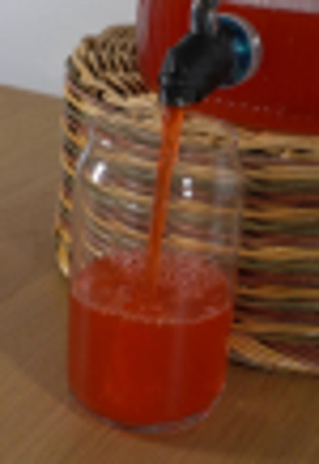
视觉工具实际返回图片 3
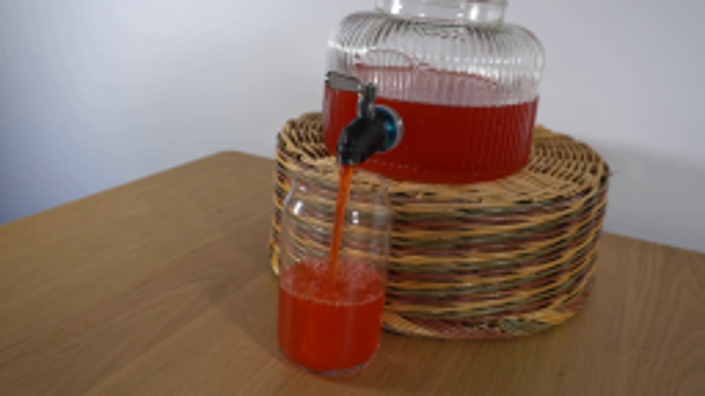
视觉工具实际返回图片 4
视觉工具实际返回图片 5
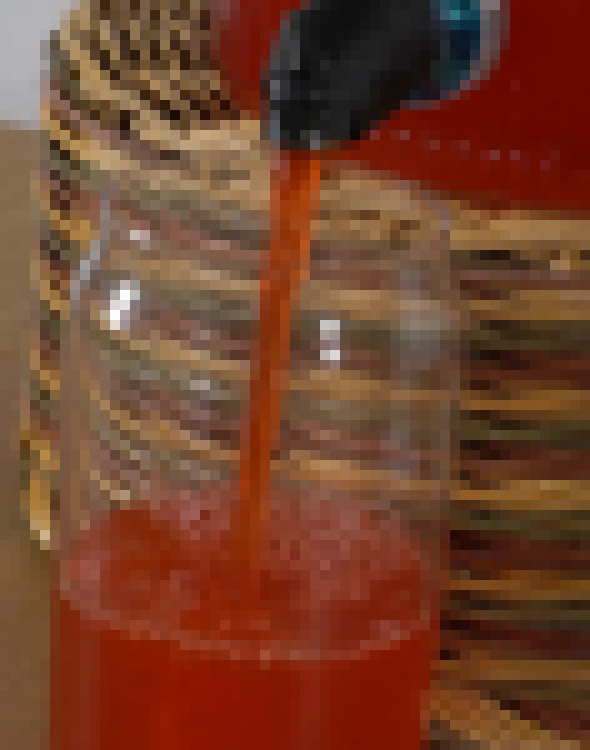
视觉工具实际返回图片 6
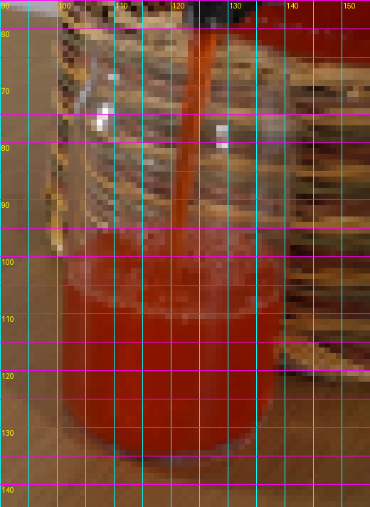
视觉工具实际返回图片 7
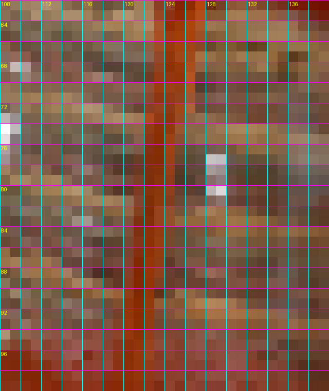
视觉工具实际返回图片 8
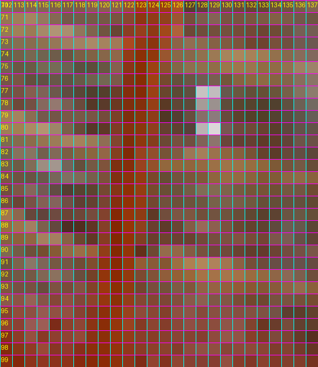
视觉工具实际返回图片 9
视觉工具实际返回图片 10
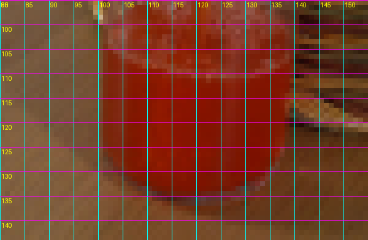
视觉工具实际返回图片 11
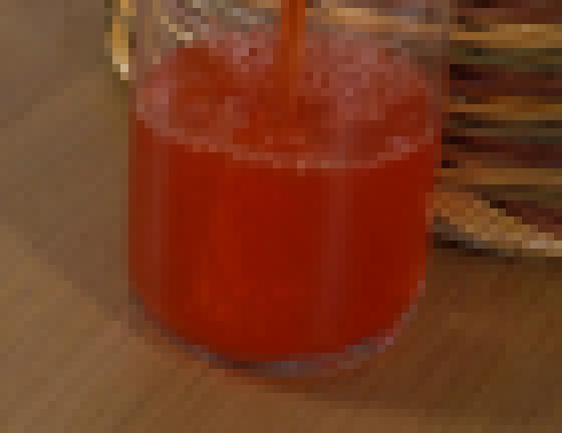
视觉工具实际返回图片 12

视觉工具实际返回图片 13
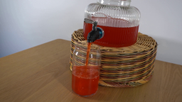
视觉工具实际返回图片 14
视觉工具实际返回图片 15
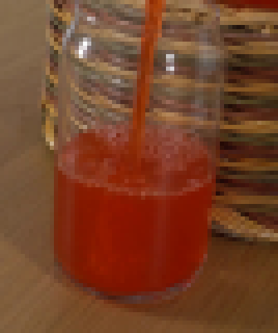
视觉工具实际返回图片 16
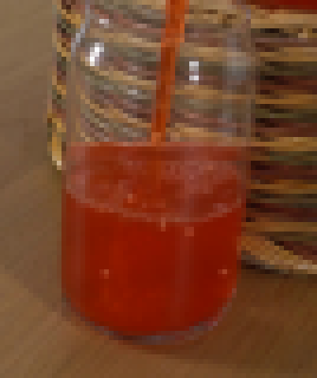
视觉工具实际返回图片 17
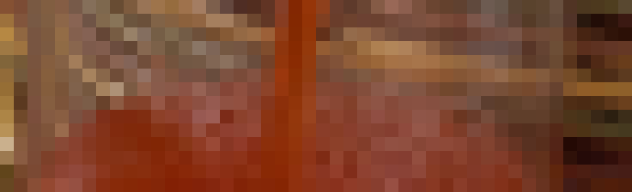
视觉工具实际返回图片 18
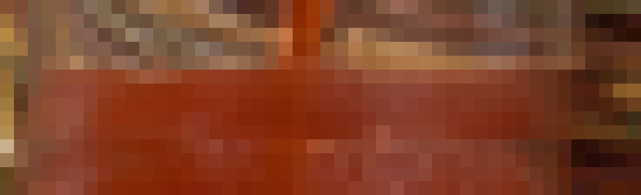
视觉工具实际返回图片 19
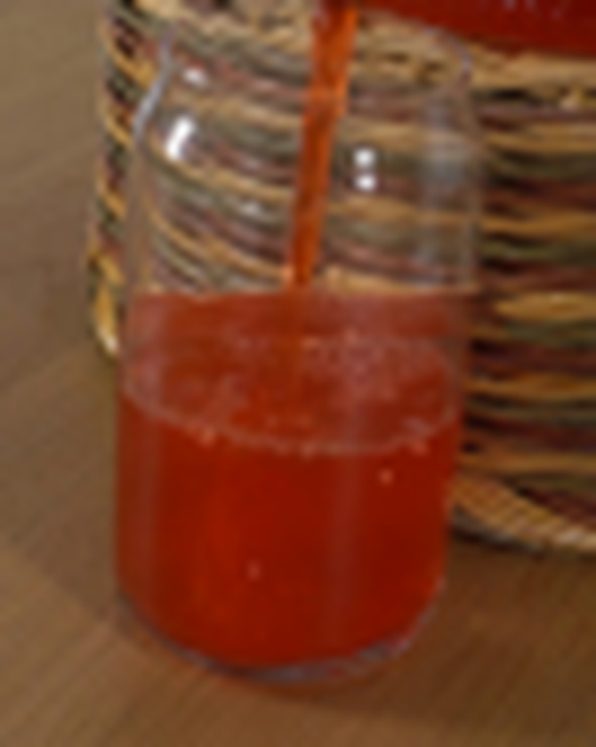
视觉工具实际返回图片 20
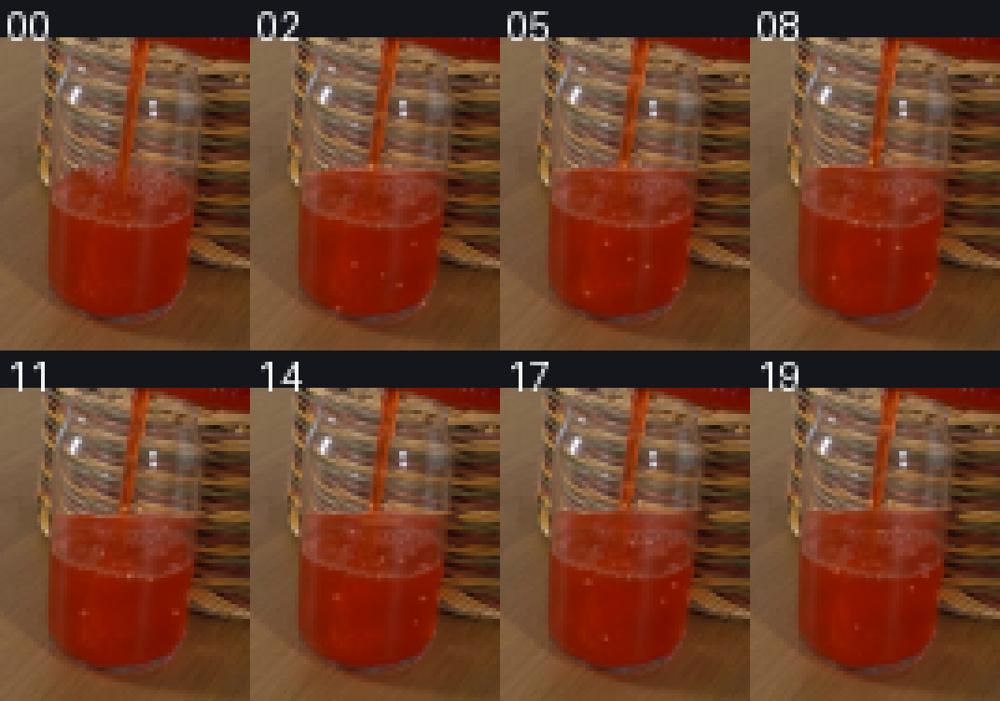
视觉工具实际返回图片 21

保存候选 2 份；完成命令 59 次；可验证图片返回 21 张。原始 API 响应与完整日志保留在本地。